如何多人协同开发同一个项目？¶
防止因为各种不确定因素导致代码丢失。
防止出现多人开发过程中，因为修改同一文件而导致的文件覆盖情况。
使用代码版本控制[Version Control Syetem]软件
目前市面上比较流行的代码版本控制器有: git,svn
现在基本没什么人使用csv
git在苹果下很不友好的，使用mac的同学，需要基于brew来进行安装，git-svn
1. 使用git管理代码版本¶
源码托管平台：github，gitee，gitlab，codepan
本项目使用git管理项目代码，代码库放在gitee码云平台。（注意，公司中通常放在gitlab私有服务器中）
1.1 Git 的诞生¶
2005 年 4 月3 日，Git 是目前世界上最先进的分布式版本控制系统（没有之一）
作用：源代码管理
为什么要进行源代码管理?
- 方便多人协同开发[防止代码冲突，相互覆盖]
- 方便版本控制[利于以后的开发人员快速了解项目的开发过程，利于需求变更的时候进行代码回滚]
1.2 Git与svn区别¶
SVN 都是集中式控制管理的，也就是有一个SVN中央服务器，开发者需要在本地安装SVN客户端，才能都把代码提交到中央服务器。 Git 是分布式的版本控制工具，也就是说没有中央服务器，每个节点的地位平等。
SVN
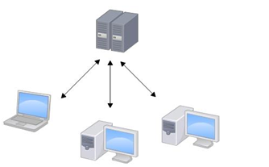
Git
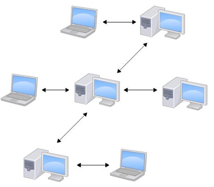
Git工作区、暂存区和版本库¶
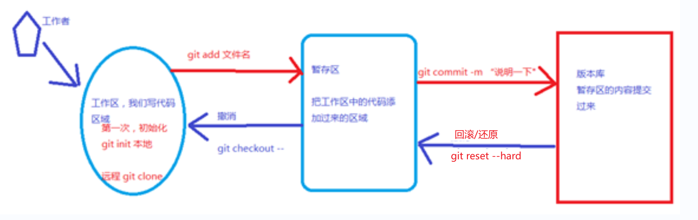
1、工作区介绍¶
就是在你本要电脑磁盘上能看到的目录。
2、暂存区介绍¶
一般存放在【.git】目录下的index文件(.git/index) 中，所以我们把暂存区有时也叫作索引。
3、版本库介绍¶
工作区有一个隐藏目录.git，这个不算工作区，而是Git的版本库。git中的head/master是分支，是版本库。
git项目仓库的本地搭建¶
cd进入到自己希望存储代码的目录路径，并创建本地仓库.git
新创建的本地仓库.git是个空仓库
cd ~/Desktop
cd pro
git init . # 如果没有声明目录,则自动把当前目录作为git仓库
初始化创建仓库
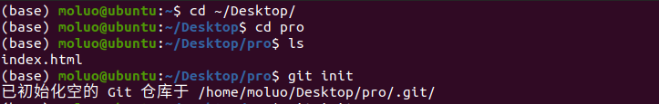
在ubuntu下可以通过Ctrl+H快捷键，直观地显示隐藏目录，可以看到.git仓库目录的结构：¶
branches/ 分支管理目录
config 当前项目代码仓库的配置信息
description 当前项目的描述
HEAD 当前项目仓库的当前版本信息
hooks/ 当前项目仓库的钩子目录[可以利用这个目录下面的文件实现自己拉去代码到服务器]
info 仓库相关信息
objects 仓库版本信息
refs 引用信息
第一次使用git一般都有配置git的用户名和邮箱。¶
# 针对当前目录所在的.git/config进行配置，只针对当前.git仓库
git config user.name 'python35'
git config user.email '649641514@qq.com'
# 针对当前操作系统用户家目录下.gitconfig文件进行全局配置，将来在当前系统下所有git管理代码就会使用该身份。
git config --global user.name 'python35'
git config --global user.email '649641514@qq.com'
如果不设置，会在提交代码版本库的时候出现以下提示：
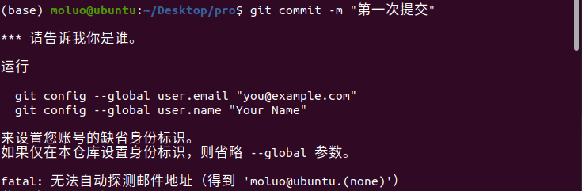
添加版本记录.
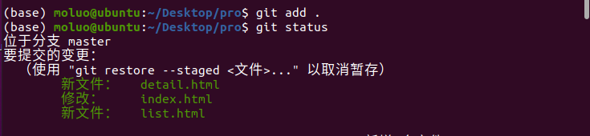
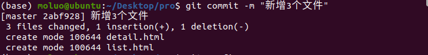
查看仓库状态¶
- 红色表示新建文件或者新修改的文件,都在工作区. git add 执行之前的效果
- 绿色表示文件在暂存区，git add 执行以后的效果
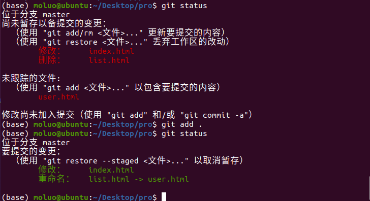
查看文件状态¶
针对与文件所处的不同分区，文件所处的状态:
(1)未追踪, 文件第一次出现在工作区, 版本库还没有存储该文件的状态(绿色)
(2)已追踪, 只要第一次,git add了文件, 文件就是已追踪
(3)未修改, 文件在工作区未被编辑
(4)已修改, 文件在工作区被修改（红色）
(5)未暂存, 文件已修改, 但是没有add到暂存区
(6)已暂存, 已经将修改的文件add到暂存区（绿色）
(7)未提交, 已暂存的文件, 没有commit提交. 处于暂存区（红色）
(8)已提交, 提交到版本库的文件修改,只有commit以后才会有仓库的版本号生成
添加文件到暂存区¶
提交到本地版本库¶
从暂存区中恢复文件/目录修改
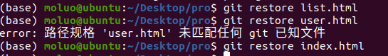
查看历史版本[查看日志]¶
git log 或者 git reflog
分页展示日志
git log –p
退出按【q】键
ctrl+f 向下分页
ctrl+b 向上分页
显示指定日期之后的日志 git log --after '2018-11-6'
显示指定日期之前的日志 git log --before '2018-11-6'
指定显示指定开发者的日志 git log --author 'lisi'
回退版本
-
方案一：
-
HEAD表示当前最新版本 -
HEAD^表示当前最新版本的前一个版本 -
HEAD^^表示当前最新版本的前两个版本，以此类推... -
HEAD~1表示当前最新版本的前一个版本 -
HEAD~10表示当前最新版本的前10个版本，以此类推...
方案二：当版本非常多时可选择的方案
- 通过每个版本的版本号回退到指定版本
分支的管理¶
git branch # 查看当前项目的所有分支
git branch <分支名称> # 在当前所在分支中，新建一个分支，新分支的代码来自于当前分支
git checkout <分支名称> # 切换分支，如果分支不存在，则报错
git checkout -b <分支名称> # 新建分支并切换到该分支
git branch -d <分支名称> # 删除指定分支，注意：必须先退出当前分支
git merge <分支名称> # 把指定分支下的代码合并当前所在分支，
合并代码过程中如果出现针对同一个文件，出现不同版本的修改，就会出现冲突。
我们就需要根据git的提示，打开冲突的所有文件，进行代码的冲突解决。
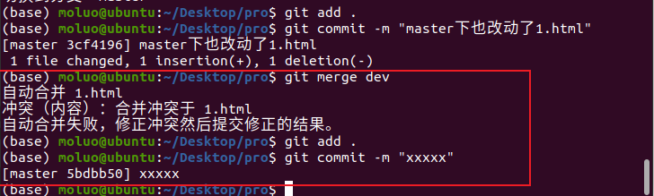
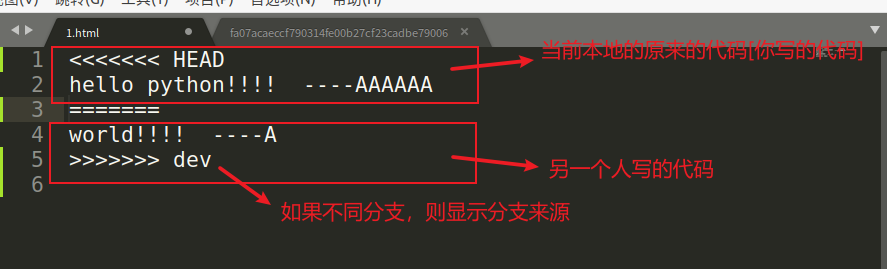
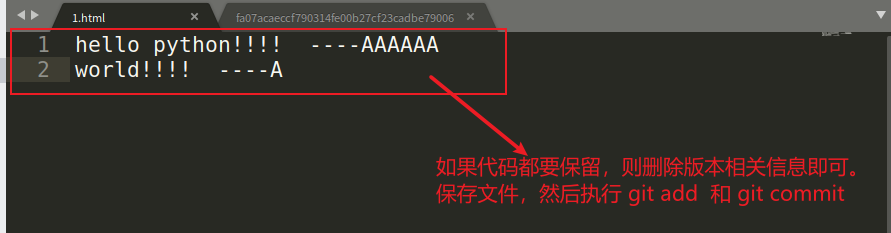
注意：
公司一般使用git管理项目,往往会搭建一个gitlab自己内部管理代码,也有公司选择使用码云的企业版仓库来管理
使用git开发项目时，有时候不一定通过https协议提交代码的。也有的公司是通过ssh协议提交,此时需要生成ssh公钥和提交公钥给仓库。[码云这些官网都会有详细的提示说明]
生成SSH公钥【必须安装git bash才可以使用这个命令，而且还要把git bash添加到系统变量里面】
ssh-keygen -t rsa -C "lisi@163.com"
参考：https://gitee.com/help/articles/4180
2. 在gitee平台创建工程¶
1） 创建私有项目库
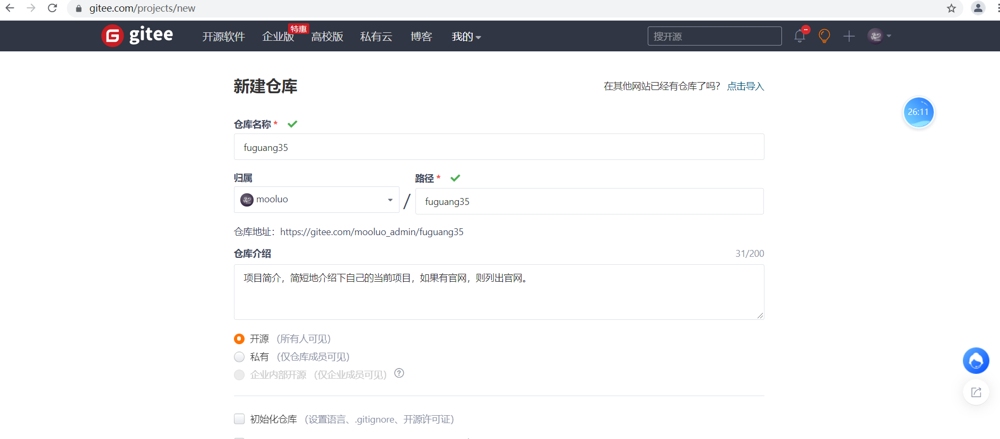
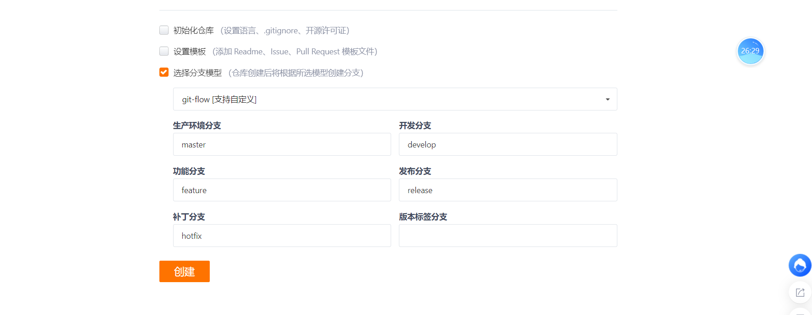
选择git-flow自定义分支模型。
上面设置就表示创建空空仓库，后面的界面:
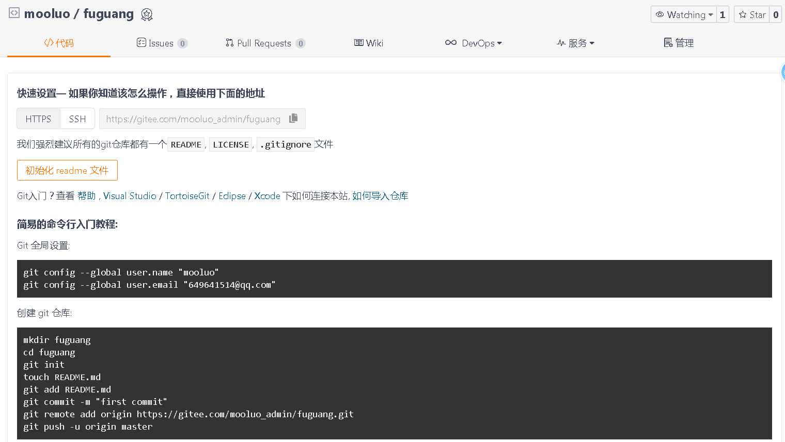
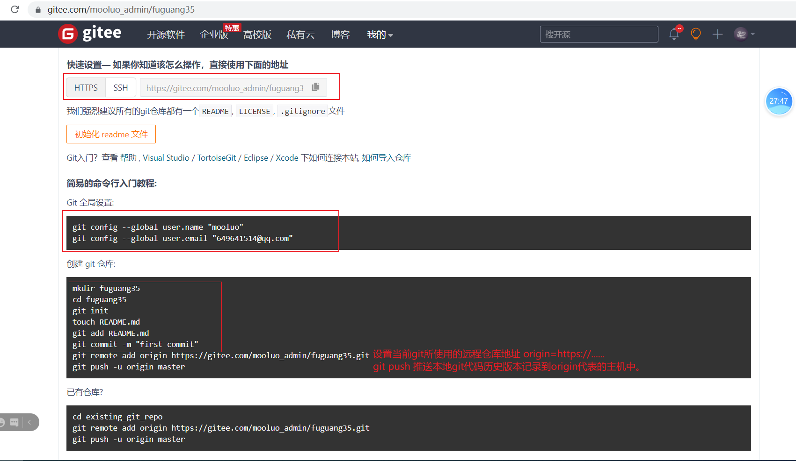
根据上面的命令提示，我们采用HTTPS协议连接gitee码云仓库
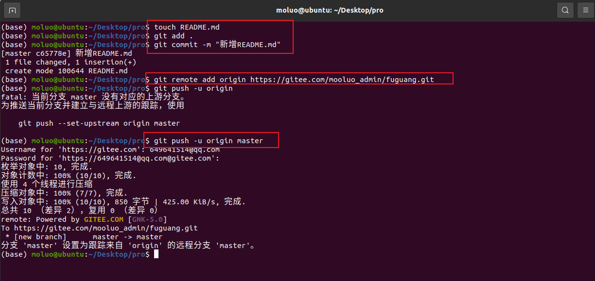
解决版本冲突¶
当多人开发时，如果出现2个以上的提交记录中对同一个文件的同一行位置有改动，则出现冲突问题！
这种往往就是开发者提交之前，没有拉去线上的最新代码版本的情况。
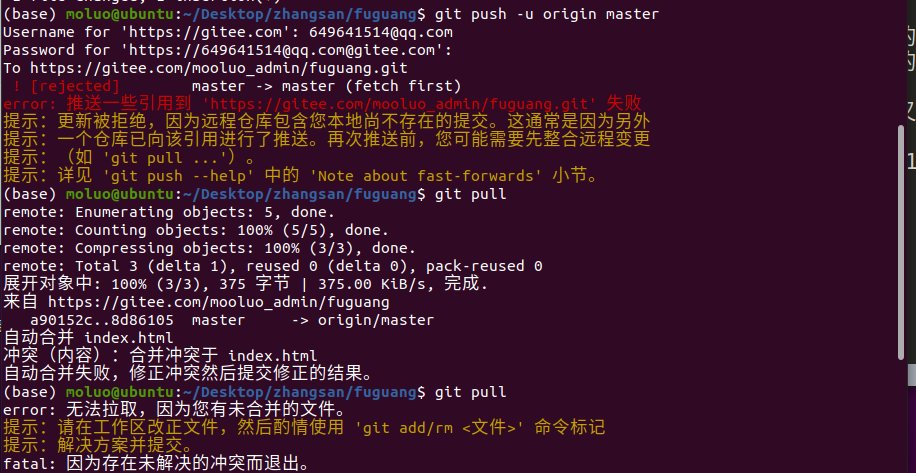
修改冲突位置的代码即可。
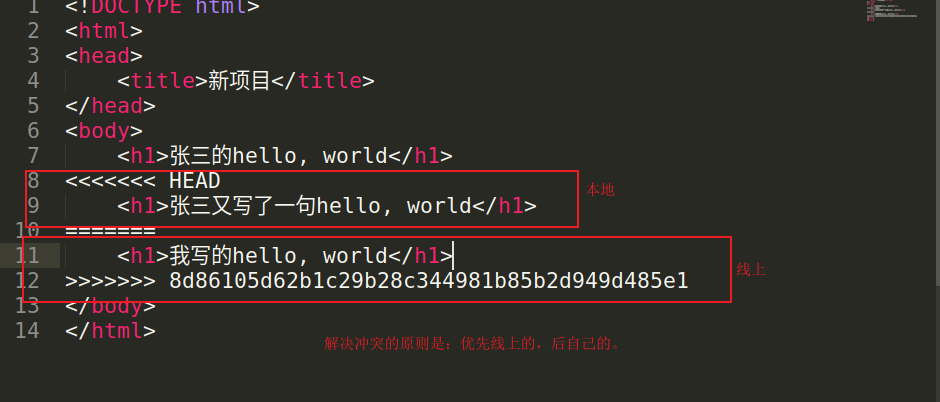
修改后的效果如下：
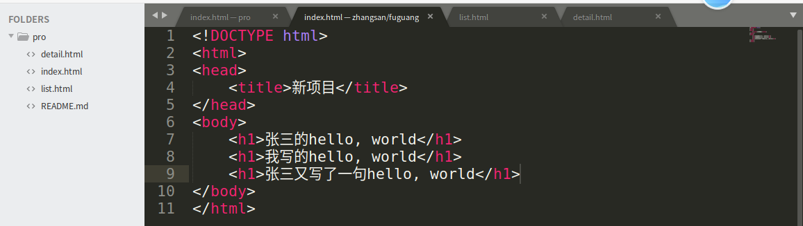
再次执行add，commit，push即可。所以今后的开发中，一定要先pull，然后再push。
分支管理¶
在开发中为了方便本地与线上运营的项目代码进行分离，方便项目的新功能的开发管理以及项目的版本迭代，我们一般可以使用git提供的分支管理来进行代码的版本管理。所谓的分支，就是把代码复刻成多个不同的版本，在不同的版本下面进行代码的编写，当有需要的时候，可以衍生新的子版本或者把子版本和原有版本进行合并。
1）列出当前项目的所有分支
master是git默认的主分支，是默认提供的。
3）创建并切换分支到dev
# 新建分支
git branch 1.0 # 创建代码分支1.0, 1.0是自定义，也可以是dev等其他单词
git checkout 1.0 # 切换本地分支代码
# 这里是上面两句代码的简写
git checkout -b dev
# 同步分支到线上服务器
git push -u origin 1.0:1.0
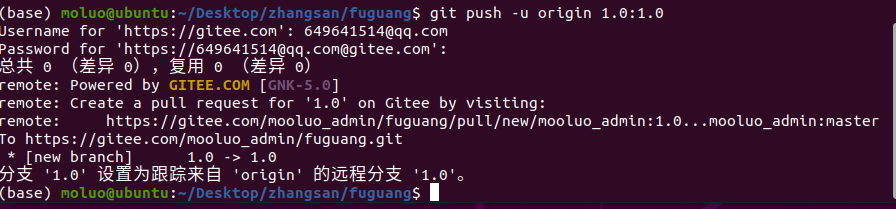
使用ssh连接git仓库¶
- 生成ssh秘钥。
https://gitee.com/help/articles/4181#article-header0
# 生成ssh私钥
ssh-keygen -t rsa -C "git账号"
# 查看公钥
cat 秘钥地址.pub
# 例如我的码云是 649641514@qq.com
ssh-keygen -t rsa -C "649641514@qq.com"
cat /home/moluo/.ssh/id_rsa.pub # 把公钥进行复制到码云平台上 https://gitee.com/profile/sshkeys
# 切换项目的连接地址
git remote remove origin # 删除仓库地址
git remote add origin git@gitee.com:mooluo_admin/fuguang35.git # 新仓库地址
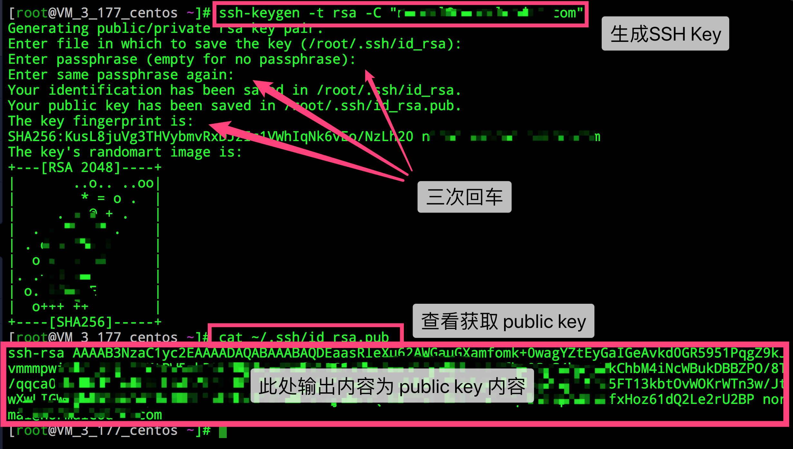
例子：
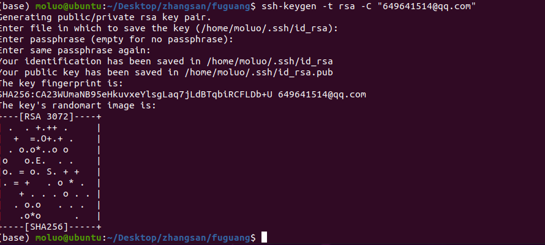
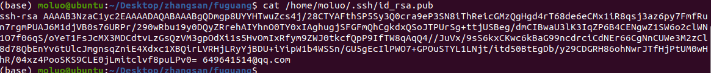
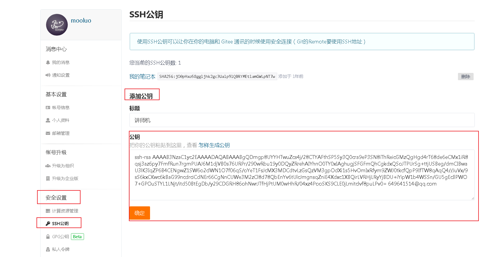
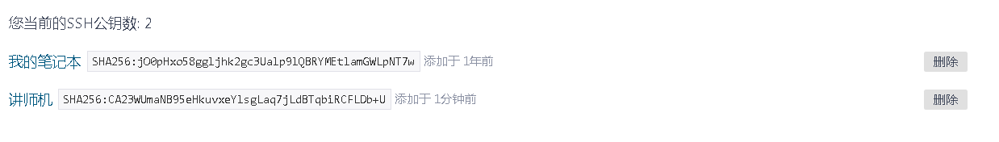
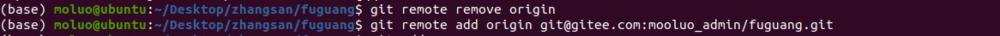
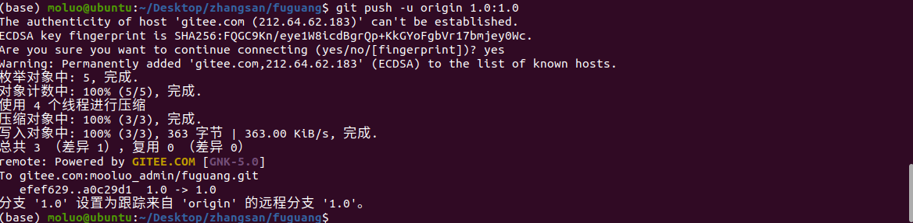
拉去远程分支的内容到本地
3. redis¶
window系统的redis是微软团队根据官方的linux版本高仿的
官方原版: https://redis.io/
中文官网:http://www.redis.cn
3.2 redis的配置¶
redis 安装成功以后,window下的配置文件保存在软件 安装目录下,如果是mac或者linux,则默认安装/etc/redis/redis.conf
3.2.1 redis的核心配置选项¶
- 绑定ip：如果需要远程访问，可将此⾏注释，或绑定⼀个真实ip
bind 127.0.0.1
- 端⼝，默认为6379
port 6379
-
是否以守护进程运⾏[这里的配置主要是linux和mac下面需要配置的]
-
如果以守护进程运⾏，则不会在命令⾏阻塞，类似于服务
- 如果以⾮守护进程运⾏，则当前终端被阻塞
- 设置为yes表示守护进程，设置为no表示⾮守护进程
- 推荐设置为yes
daemonize yes
- 数据⽂件
dbfilename dump.rdb
- 数据⽂件存储路径
dir .
- ⽇志⽂件
logfile "C:/tool/redis/redis-server.log"
- 数据库，默认有16个
database 16
- 主从复制，类似于双机备份。
slaveof
3.2.2 Redis的使用¶
Redis 是一个高性能的key-value数据格式的内存缓存，NoSQL数据库。
NOSQL：not only sql，泛指非关系型数据库。
关系型数据库: (mysql, oracle, sql server, sqlite)
非关系型数据库[ redis，hadoop，mangoDB]:
redis： 内存型(数据存放在内存中)的非关系型(nosql)key-value(键值存储)数据库， 支持数据的持久化(注: 数据持久化时将数据存放到文件中，每次启动redis之后会先将文 件中数据加载到内存)，经常用来做缓存(用来缓存一些经常用到的数据，提高读写速度)。
redis是一款基于CS架构的数据库，所以redis有客户端，也有服务端。
其中，客户端可以使用python等编程语言，也可以终端命令行工具或界面操作工具，例如：rdm。
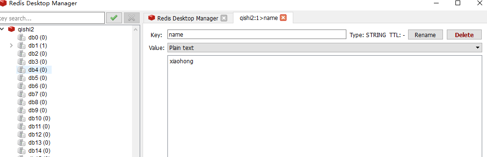
redis客户端连接服务器：
# 默认连接本地127.0.0.1:6379
redis-cli
# 如果连接远程服务器中的redis，则如下：
redis-cli -h `redis服务器ip` -p `redis服务器port`
3.3 redis数据类型¶
1. string类型:
字符串类型是 Redis 中最为基础的数据存储类型，它在 Redis 中是二进制安全的，也就是byte类型
最大容量是512M。
2. hash类型:
hash用于存储对象，对象的结构为属性、值，值的类型为string。
key:{
域:值[这里的值只能是字符串]，
域:值，
域:值，
域:值，
...
}
3. list类型:
列表的元素类型为string。
key:[ 值1，值2,值3..... ]
4. set类型:
无序集合，元素为string类型，元素唯一不重复，没有修改操作。
{值1,值4,值3,值5}
5. zset类型:
有序集合，元素为string类型，元素唯一不重复，没有修改操作。
3.4 string¶
如果设置的键不存在则为添加，如果设置的键已经存在则修改
- 设置键值
set key value
- 例1：设置键为
name值为xiaoming的数据
set name xiaoming
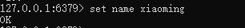
- 设置键值及过期时间，以秒为单位
setex key seconds value
- 例2：设置键为
aa值为aa过期时间为3秒的数据
setex name 20 xiaoming
关于设置保存数据的有效期
- 设置多个键值
mset key1 value1 key2 value2 ...
- 例3：设置键为
a1值为python、键为a2值为java、键为a3值为c
mset a1 python a2 java a3 c
- 追加值
append key value
- 例4：向键为
a1中追加值haha
append a1 haha
- 获取：根据键获取值，如果不存在此键则返回
nil
get key
- 例5：获取键
name的值
get name
- 根据多个键获取多个值
mget key1 key2 ...
- 例6：获取键
a1、a2、a3的值
mget a1 a2 a3
3.5 键操作¶
- 查找键，参数⽀持正则表达式
keys pattern
- 例1：查看所有键
keys *
- 例2：查看名称中包含
a的键
keys a*
- 判断键是否存在，如果存在返回
1，不存在返回0
exists key1
- 例3：判断键
a1是否存在
exists a1
- 查看键对应的
value的类型
type key
- 例4：查看键
a1的值类型，为redis⽀持的五种类型中的⼀种
type a1
- 删除键及对应的值
del key1 key2 ...
- 例5：删除键
a2、a3
del a2 a3
- 查看有效时间，以秒为单位
ttl key
- 例7：查看键
bb的有效时间
ttl bb
3.6 hash¶
结构：
- 设置单个属性
hset key field value
- 例1：设置键
user的属性name为xiaohong
hset user name xiaohong
- 设置多个属性
hmset key field1 value1 field2 value2 ...
- 例2：设置键
u2的属性name为xiaohong、属性age为11
hmset u2 name xiaohongage 11
- 获取指定键所有的属性
hkeys key
- 例3：获取键u2的所有属性
hkeys u2
- 获取⼀个属性的值
hget key field
- 例4：获取键
u2属性name的值
hget u2 name
- 获取多个属性的值
hmget key field1 field2 ...
- 例5：获取键
u2属性name、age的值
hmget u2 name age
- 获取所有属性的值
hvals key
- 例6：获取键
u2所有属性的值
hvals u2
- 删除属性，属性对应的值会被⼀起删除
hdel key field1 field2 ...
- 例7：删除键
u2的属性age
hdel u2 age
3.7 list¶
列表的元素类型为string
按照插⼊顺序排序
- 在左侧插⼊数据
lpush key value1 value2 ...
- 例1：从键为
a1的列表左侧加⼊数据a 、 b 、c
lpush a1 a b c
- 在右侧插⼊数据
rpush key value1 value2 ...
- 例2：从键为
a1的列表右侧加⼊数据0、1
rpush a1 0 1
- 在指定元素的前或后插⼊新元素
linsert key before或after 现有元素 新元素
- 例3：在键为
a1的列表中元素b前加⼊3
linsert a1 before b 3
设置指定索引位置的元素值
-
索引从左侧开始，第⼀个元素为0
-
索引可以是负数，表示尾部开始计数，如
-1表示最后⼀个元素
lset key index value
- 例5：修改键为
a1的列表中下标为1的元素值为z
lset a 1 z
-
删除指定元素
-
将列表中前
count次出现的值为value的元素移除 - count > 0: 从头往尾移除
- count < 0: 从尾往头移除
- count = 0: 移除所有
lrem key count value
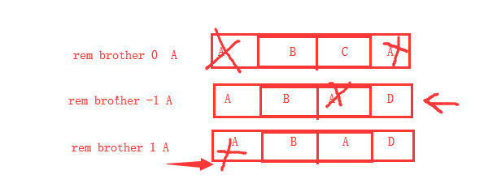
- 例6.1：向列表
a2中加⼊元素a、b、a、b、a、b
lpush a2 a b a b a b
- 例6.2：从
a2列表右侧开始删除2个b
lrem a2 -2 b
- 例6.3：查看列表
a2的所有元素
lrange a2 0 -1
3.8 set¶
- 添加元素
sadd key member1 member2 ...
- 例1：向键
a3的集合中添加元素zhangsan、lisi、wangwu
sadd a3 zhangsan sili wangwu
- 返回所有的元素
smembers key
- 例2：获取键
a3的集合中所有元素
smembers a3
- 删除指定元素
srem key value
- 例3：删除键
a3的集合中元素wangwu
srem a3 wangwu
3.9 redis的几个站点地址¶
中文官网： http://www.redis.cn/
英文官网：https://redis.io
参考命令：http://doc.redisfans.com/
针对redis中的内容扩展¶
flushall 清空数据库中的所有数据